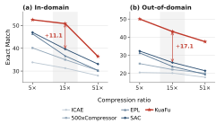
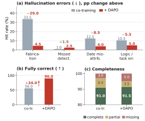
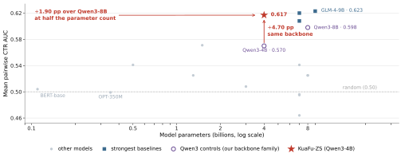

KuaFu：将十亿规模的长用户行为压缩为理解
摘要
对话智能体、生成式推荐器和个性化广告系统都依赖于同一项能力：从原始行为日志中理解每一位用户。当前工业界的主流做法是任务特定的：针对每个画像任务，先从完整行为历史中抽取与任务相关的子序列，再在其上训练一个专用的理解模型。然而在生产环境中，这条务实路线会遇到两个瓶颈。第一，即便经过过滤，单任务序列仍然极长：内容兴趣摘要平均每位用户要读取数百条行为项，尾部甚至超过一千条，一旦序列化为提示文本就已达到数万个词元。第二，画像必须定期刷新。我们每周要为十亿用户重新计算画像，总体需要约100K QPM；在固定 GPU 预算下，这对必须维持的单 GPU 吞吐量构成了硬性下界。因此压缩成为必需。然而截断或粗粒度压缩会悄然扭曲生成的画像，并引入四类幻觉——捏造、遗漏、日期错配和逻辑断裂——而在无法评估压缩表示本身的情况下，这些问题只会以下游业务指标的整体性退化形式浮现。我们提出 KuaFu，一个统一的行为压缩层，其最小单元是单条行为项。一个双轴投影器将每一项压缩为2–4个词元，宽度为128–256——在词元轴上约压缩，在宽度轴上约压缩，使单项缓存从10 KB 降至0.5 KB——并结合以保真度为导向的四阶段训练和分层中间评估协议。在四个生产画像任务上，压缩模型在全部五项主要指标上持平或超过未压缩的单任务生产模型，单 GPU 吞吐量提升37%–350%，并节省190块 GPU。在公开基准上，KuaFu 在相同压缩比下几乎一致优于现有压缩器（在域外 MRQA 上最高提升 EM）；在 RecBench 上，4B 模型比其 8B 对手高出1.90分。KuaFu 已在腾讯广告与推荐平台上完整部署十个月，整体 GMV 提升1.37%。
1. 引言
1.1. 背景
数字平台的发展使用户行为成为生产系统中规模最大的数据模态之一。日志既包含显式交互——曝光、点击、转化——也包含隐式信号，如停留时长、滚动深度和会话长度。在工业规模下，用户基数达到十亿，单个用户在很长的时间跨度内可累积数万至数十万条行为事件。当前工业界的主流做法是按任务分别处理：每个画像任务（兴趣摘要、职业与行业、人生阶段……）先从完整历史中过滤出与任务相关的子序列，再为其训练一个专用的理解模型。这种分工清晰，每个任务都可以独立迭代和上线，使其成为当今最务实的选择。然而它面临两个生产事实——即便经过过滤，序列仍然极长；以及画像必须定期刷新——两者都在§1.2中量化。
大语言模型改变了这一图景：LLM 不是从统计共现中外推，而是能够读取行为序列背后的意图。压缩理论提供了桥梁：模型压缩一个数据集所需的比特数直接反映了它对该数据的理解与预测程度(Delétang et al., 2023)——压缩与理解是同一目标的两种视角。因此，在将长行为序列交给 LLM 之前，先将其压缩为紧凑、语义丰富的表示，是兼顾准确性与效率的自然方式；而一个紧凑、忠实、可复用的行为表示，也正是使最终状态——一个读取全部历史并按需回答任何画像问题的基础模型——从根本上成为可能的前提。
1.2. 三个相互耦合的问题
将这一想法落地到生产环境会暴露三个相互耦合的问题：成本壁垒迫使我们压缩（P1），压缩本身会诱发幻觉（P2），而评估的缺失使这些幻觉无法被度量或定位（P3）。图1展示了应对这些问题的系统。
P1：长序列例行刷新的成本壁垒。 随着序列增长，将历史序列化为提示文本不可避免地会溢出上下文窗口，而经过滤的、任务特定序列已经是缩减后的情形：其尾部仍超过一千项（表2），因此未截断的历史远远超出可达范围。更具约束力的是生产规模约束：画像需按周为十亿用户重新计算，总体约100K QPM，在固定 GPU 预算下这成为单 GPU 吞吐量的硬性下界——而直接对数万原始词元进行推理远达不到这一下界。为摊销成本，压缩表示必须离线缓存并在线复用，这使单个表示的字节大小变得至关重要：将每一项存为两个2560维向量（约10 KB，采用fp16）在全规模下不可行，而（约0.5 KB）则使缓存变得可行。
P2：压缩诱发的幻觉。 当 LLM 被迫基于压缩或截断的行为描述进行推理时，四种用户理解特有的幻觉模式会反复出现：捏造（虚构从未发生过的兴趣）、遗漏（丢弃在压缩中丢失的偏好信号）、日期错配（将事件归入错误的时间桶）以及逻辑断裂（无法基于残余证据进行推理）。先前工作报告称，提示压缩几乎总是会提高幻觉率，其中信息损失是主要原因(Zhang et al., 2025)，这与我们的生产观察一致。这些模式集中在开放式生成中，且在缺乏真实画像的情况下难以检测。
P3：未被度量的中间阶段。 行为压缩与理解作为中间步骤，缺乏标准化的数据集和指标。推荐中的行为序列压缩以端到端方式评判（CTR、GMV），而通用压缩对画像语义不敏感；两者都没有追问压缩表示是否忠实保留了用户偏好。因此，压缩过程中引入的错误只会以间接的下游退化形式浮现：一次在线 A/B 测试需要一周，而根本原因究竟是压缩伪影、幻觉还是解码器能力不足，无法从月末业务指标中区分开来。
1.3. 贡献
(a) 架构：项级、可缓存、双轴压缩。 每个行为事件被独立编码，因此嵌入可缓存、可跨用户和任务复用，并可在新行为到来时追加；缓存随项库规模增长，而不随增长。据我们所知，这是在十亿用户广告推荐生产环境中首次以项粒度编码行为文本。随后由双轴投影器沿词元轴和宽度轴进一步压缩（量化结果见摘要）。
(b) 训练：以保真度为导向的四阶段配方。 覆盖42种任务类型的分层难度数据；四个阶段——重建、理解、压缩与生成的联合训练、以及幻觉感知强化学习——由易到难逐步继承；重建阶段采用序列长度课程以确保收敛；强化学习目标为每种幻觉类型设置一个惩罚头，并加入完整性奖励，从而在抑制幻觉的同时不让模型退化为拒绝回答。
(c) 评估与部署：分层中间协议与大规模生产验证。 从简单分类和复杂多标签归因到开放域 QA 与多任务迁移，我们直接对压缩表示打分，将“压缩误差下游退化”的反馈闭环从数月缩短到数天。结果与部署成效在摘要中概述，并在§4中详述。
2. 相关工作
通用上下文压缩。 硬压缩（Selective Context(Li et al., 2023b)、LLMLingua(Jiang et al., 2023)及其后续工作）按信息量丢弃词元，仍输出自然语言。软压缩将上下文写入少量记忆槽位：GIST(Mu et al., 2023)压缩短指令，AutoCompressor(Chevalier et al., 2023)递归生成摘要向量，ICAE(Ge et al., 2023)用 LoRA 编码器写入记忆并由冻结解码器据此生成，500xCompressor(Li et al., 2024)将压缩比推得更高，REFRAG(Lin et al., 2025)使用强化学习决定为 RAG 将哪些块展开为完整词元，近期的 SAC(Liu et al., 2025b)和 EPL(Zhao et al., 2024)进一步提升了压缩比与保真度；后两者是我们的主要对比对象。这些方法确立了问答在压缩后仍可维持，但其对象是连续文档或检索到的段落，并未显式建模带时间戳的跨模态行为事件。其目标指向重建或下游 QA，并不直接约束捏造、漏检或日期错置(Zhang et al., 2025)。
推荐中的项与行为词元化。 生成式推荐将项压缩为离散或连续词元：TIGER(Rajput et al., 2023)用 RQ-VAE 推导层级语义 ID，LAMIA(Liu et al., 2024)学习一组并行的多侧面嵌入，Token Factory(Chen et al., 2026)融合异构交互特征，PatchRec(Liao et al., 2025)将久远历史分组为会话块，而 Q-Former 家族(Li et al., 2023a)（包括 U2QT(He et al., 2025)）使用固定数量的查询作为信息瓶颈。这些表示支持下一项预测，但评估几乎只使用 HR、NDCG 和 CTR：偏好与时间顺序是否在压缩后得以保留无法从端到端分数中分离出来，而且同一表示向画像或对话式推荐——这些需要解释行为证据的场景——迁移效果很差。GISTBench(Fostiropoulos et al., 2026)和 UserSumBench(Wang et al., 2024)开始评估兴趣是否可验证，但它们针对未压缩文本，并未将压缩比、保真度和画像质量置于同一权衡平面上。
工业系统中的长序列与LLM效率。 工业界沿三条方向回答同一个问题。长行为序列的高效建模：字节跳动在一个短视频平台上以十亿级规模端到端建模10K级ID序列(Guan et al., 2026)，中国科学院软件研究所与美团合作将稀疏注意力引入长期行为CTR预测(Lai et al., 2026)；二者都在排序模型内部解决长度问题并以预测精度为目标，而KuaFu则在LLM输入侧进行语义压缩，并以可解释、可复用的画像表示为目标。 LLM部署效率：美团分两阶段将推理LLM蒸馏进BERT(Xia et al., 2026)，阿里国际将多视角思维链蒸馏为潜在推理(Qiu et al., 2026)，百度针对长上下文在线剪枝KV缓存(Li et al., 2026a)，阿里巴巴与香港城市大学合作加速生成式推荐的解码(Wang et al., 2026)——它们都是以大模型换小模型来节省成本，而KuaFu保留LLM的理解能力并改为压缩其输入，产出的资产可离线缓存并在不同请求与任务间复用，而非按请求重新计算。 生产环境中由PLM/LLM驱动的生成式推荐：Google DeepMind与YouTube将预训练语言模型适配到工业生成式推荐(He et al., 2026)，浙江大学与淘天学习长语义ID(Li et al., 2026b)；这些工作理解物品侧语义，而KuaFu与之互补，因为它理解用户侧的长行为序列。
3. 方法
3.1. 问题设定与物品级范式
令表示用户的第个行为物品（一次点击、一次浏览……）。同一用户的个物品按时间顺序构成序列。给定任务提示，模型产生答案。我们以单个物品作为最小压缩单元，构建多物品压缩范式：每个被独立编码为物品嵌入，按的时间顺序拼接，结果与一同送入解码器。与将整个历史编码为一个共享向量不同，该范式满足——压缩结果仅取决于该物品本身。由此产生三点结果：(1)同一物品的可在不同用户的序列中复用；(2)新增行为只需计算并追加，无需重新压缩；(3)离线缓存随物品库规模增长，而非随用户数量增长。这三点正是§4.9所述系统经济性的全部来源。
3.2. 压缩器、投影器与解码器
压缩器。压缩器是一个带LoRA、隐藏宽度为的因果语言模型。我们追加个记忆词元至之后；这些词元不属于普通词表，其嵌入来自单独的表，而中的词保留的词嵌入。对拼接后的序列进行一次前向传播，得到个记忆位置处的最后一层隐藏状态，
| (1) |
该状态仅取决于。每个物品独立编码，因此一个嵌入对应一个可缓存、可追加的物品。
投影器。仍由个宽度为的向量组成。投影器沿两个轴压缩：词元轴将数量从减少到（例如），宽度轴从减少到（例如）。一个Down网络将每个向量的维度降至，一个组合矩阵在该低维空间内将个向量融合为，一个Up网络再映射回宽度并加到池化残差上，
| (2) |
前者避免将原始文本一步坍缩为过短的表示；后者降低存储量。记为的原始词元数，则词元轴压缩比为；在线推理缓存的是维而非维表示，从而宽度轴压缩比为。
解码器与位置编码。解码器不扩展其词表。提示中每个被压缩的物品都替换为其物品嵌入，其余文本保留的词嵌入，生成在拼接后的序列上进行。一维RoPE既用于单个物品内部（包括其记忆词元），也用于整个输入；物品之间的顺序由拼接顺序承载。
3.3. 四阶段训练
四个阶段都服务于同一个目标——压缩表示的事实保真度——并从易到难逐步继承。三个监督阶段共享相同的前向过程（独立编码每个物品，按时间顺序拼接，送入解码器），仅在目标和可训练集合上有所不同；它们都在每个样本的物品数量上执行课程学习，从短序列逐步增长到长序列。表1总结了哪些模块被更新。
压缩器预训练从压缩输入重建原始文本：被压缩为并由还原。仅更新上的LoRA和记忆嵌入；投影器关闭，冻结且仅用于计算还原损失。还原在整个拼接后的压缩序列上进行，因此解码器必须从共存的中逐项还原原始文本。在长序列上直接还原无法收敛，因此采用按物品数量划分的五桶课程（、–、–、–、–）。
压缩器后训练在压缩输入上回答问题：接入投影器并与LoRA和记忆嵌入一同训练，而保持冻结。解码器必须从每个共存的中读取所需信息，并将它们融合为对整个历史的理解。
压缩与生成的联合训练解冻，并联合更新上的LoRA、记忆嵌入、投影器和。在后训练中被冻结，因此只能为一个永不改变的解码器书写；两端同时训练使学会读取压缩的物品嵌入，同时和投影器将调整到问答任务所需的状态。降维通过残差上的余弦调度进行退火，从而防止压缩瓶颈在生成损失的压力下坍塌。
| Stage | Objective | C | P | D |
|---|---|---|---|---|
| Pre-training | reconstruct | update | — | freeze |
| Post-training | compressed QA | update | update | freeze |
| Co-training | fit both ends | update | update | update |
| Hallu.-aware RL | de-hallucinate | freeze | freeze | update |
3.4. 幻觉感知强化学习
该阶段直接在压缩表示之上抑制幻觉：和投影器冻结，物品嵌入从离线缓存注入，仅更新。对每个提示采样一组答案，并由生成式奖励模型对照原始文本逐项评判。奖励由两部分组成：四类错误——捏造、漏检、日期归因错误、逻辑断裂——各自评判为有/无，并按权重惩罚，权重随对用户造成的危害递增（捏造最重，漏检最轻）；完整性则从{完整、部分、缺失}映射为奖励加成，以防止模型通过少答来规避惩罚：
| (3) |
组内个答案共享同一提示，优势按组均值归一化。策略使用DAPO(Yu et al., 2025)更新：词元级重要性比率、非对称裁剪、无KL项，并将截断的答案排除在损失之外，这缓解了GRPO(Shao et al., 2024)的长度坍塌。
4. 实验
4.1. 实验设置
模型采用LLM编码器加LLM解码器的架构；压缩器和下游解码器均基于Qwen3-4B(Yang and others, 2025)，与外部压缩基线的对比将骨干替换为Llama-3.2-1B(Grattafiori and others, 2024)以匹配对照组，该设计还扩展到了多模态骨干Qwen3-VL-4B-Instruct(Qwen Team and others, 2025)，并配以冻结的ViT编码器。
训练数据来自两个来源。广告行为序列包含原始用户广告行为以及由这些长序列衍生的兴趣摘要序列。通用数据包含中文长文本语料MNBVC(MNBVC Community, 2023)（新闻、小说、教科书、法律与医学文档）以夯实通用重建能力，以及覆盖实体识别、意图识别、续写和问答的通用领域NLP与RAG问答。经专门的评判器过滤重复和低质量样本后，所有数据统一为压缩–还原和压缩–理解两种格式，按难度混合并分阶段注入。重建样本对样本中每个物品（或块）进行压缩并按时间顺序逐一还原，按物品数量分桶为、–、–、–、–以构成课程；理解样本主要基于广告行为序列构建（构建细节见附录A）。最终训练集涵盖42种任务类型：1序列物品/段落重建、8简单行为序列理解、7通用NLP理解、22复杂长序列行为理解和4下游用户理解任务；各阶段的样本数与词元数见附录A（分别为2.13M/8.06B、150K/0.80B、350K/2.30B、350K/2.30B和5K/41M）。
基线分为三组。在线基线是在各下游任务上用SFT和DPO训练的未压缩LLM。通用行为压缩器为ICAE、LLMLingua-2、500xCompressor、EPL和SAC。推荐组将LLM用作推荐器，构建于GLM、Qwen、Llama和Mistral之上。
评估分为离线和在线。离线我们报告下游任务的精确率、召回率和F1或准确率，以及损失和QPM；在线我们报告GMV和QPM的提升。内部验证集从我们自己的数据中划分，聚焦于四个下游任务。公开数据为六个域内MRQA(Fisch et al., 2019)子集（SQuAD、NewsQA、TriviaQA、SearchQA、HotpotQA和NaturalQuestions）以及六个域外子集（BioASQ、DROP、DuoRC、RACE、Relation Extraction和TextbookQA）。推荐侧在MIND、MicroLens、Goodreads、CDs和H&M上使用RecBench(Liu et al., 2025a)。
优化与部署。学习率约为–，训练3–5个epoch，强化学习使用DAPO，部署运行在vLLM(Kwon et al., 2023)上，并配有嵌入服务器，通过信号量限制并发以保持GPU显存稳定。
4.2. 生产画像任务
KuaFu 部署于腾讯广告与推荐平台的画像生产流水线中，每周挖掘十亿用户的原始行为序列，并输出可直接写入推荐特征的结构化标签。在这样的频次下，吞吐量是刚性约束，因此行为序列在物品级别上进行压缩。标签分为两个业务族。兴趣摘要面向内容兴趣和电商兴趣，从数百到数千条跨模态行为中归纳出可验证的兴趣点；序列更长，比例设为。用户画像面向职业/行业与人生阶段，从相对较短的行为中判定稳定属性；比例为。两个族共享同一个物品级压缩表示，仅在下游头部和指标上有所不同。
表2将单任务在线模型（未压缩）与消费压缩表示的多任务 KuaFu 进行比较。兴趣摘要报告 F1；职业/行业报告行业/职业准确率；人生阶段报告精确匹配准确率。在全部五项主要指标上，压缩后的 KuaFu 均不劣于在线模型，其中人生阶段的提升最大（）。除了将十亿用户的每周全量刷新纳入 QPM 预算之外，压缩在一定程度上还净化了长序列——弱相关、重复和噪声行为被压缩掉，从而使稳定的兴趣和属性信号凸显出来。
| Task | Family | items | ratio | online | KuaFu | |
|---|---|---|---|---|---|---|
| Content interest | summary | 400/1200 | 85.9 | 86.5 | ||
| E-com. interest | summary | 150/200 | 95.7 | 96.1 | ||
| Industry | profile | 30/100 | 81.0 | 82.1 | ||
| Occupation | profile | 30/100 | 86.7 | 87.6 | ||
| Life stage | profile | 16/100 | 76.0 | 78.0 |
4.3. 内部基准测试：与外部压缩器的对比
为检验通用压缩器在工业数据上的表现，我们在 KuaFu 训练数据所覆盖的四个下游任务的验证集上进行评估。四个软压缩基线并非现成权重或零样本调用，而是在与 KuaFu 对齐的条件下重新训练：相同的用户行为序列、相同的训练/验证划分（验证集不参与任何基线的训练或模型选择）、来自四个下游任务的相同监督、相同的输入重组、共同的 Llama-3.2-1B 主干以及共同的压缩比；每个基线遵循其原论文的训练目标和流程直至收敛，其压缩器共享 KuaFu 的 LoRA 参数化（秩，缩放因子），目标语言模型保持冻结。LLMLingua-2 是一种免训练的硬压缩方法，以官方权重在比例下零样本调用，与软压缩设定不对齐；它作为外部参考单独列出，不纳入对齐协议。所有分数均由 LLM 评判器产生。
KuaFu 以63.0明显领先，其在各任务上相对最强基线的优势分别为16.0、8.2、30.0和26.6个百分点。没有任何基线在四个任务中的任何一个上超过60，而 KuaFu 最弱的任务（人生阶段，51.1）仍高于最佳总体基线平均值（42.4）。在训练数据、划分、监督、输入重组、主干、可训练范围、参数化和压缩比全部对齐的情况下，这一领先可归因于压缩结构本身——以行为物品为压缩单元并将每个物品映射到一组嵌入，而非将整个序列压缩为少量词元或在词元粒度上进行选择。四个任务还呈现出一致的难度顺序：人生阶段对每种方法而言得分都最低，这一梯度不依赖于任何单一方法。
| Method | E-com. | Occup. | Content | Life | Overall | |
|---|---|---|---|---|---|---|
| LLMLingua-2† | 49.7 | 31.1 | 22.9 | 22.7 | 31.6 | |
| ICAE | 50.5 | 43.1 | 30.9 | 21.7 | 36.6 | |
| SAC | 48.3 | 50.7 | 34.3 | 23.7 | 39.2 | |
| 500xCompressor | 55.7 | 46.1 | 32.0 | 23.9 | 39.4 | |
| EPL | 53.9 | 56.3 | 34.7 | 24.5 | 42.4 | |
| KuaFu | 71.7 | 64.5 | 64.7 | 51.1 | 63.0 | — |

4.4. 通用压缩：MRQA 域内与域外
为检验通用压缩能力，我们按照 SAC 的原始方法在其训练数据上重新训练 KuaFu；所有基线数值均取自 SAC 论文。域内评估使用六个 MRQA 子集的官方测试集。域外评估衡量零样本迁移：使用完全相同的检查点且不做任何领域自适应，因此两种设定可直接比较。
图3绘制了精确匹配随压缩比的变化。在两种设定下，KuaFu 在每个比例上都领先；未压缩时其域内 EM 达到70.8，域外达到64.4。有两点值得关注。在比例下，其域内 EM 为50.8，已与同一主干上的 SAC 的水平相当（46.95），即在三倍压缩强度下仍具有相同的可用性。而在域外，随着比例增大，优势仅轻微收窄：在比例下，KuaFu 的得分仍高于所有基线在比例下的得分，因此跨域泛化在激进压缩下依然保持。唯一的例外是 ROUGE-1 F1：在域内比例下，KuaFu（45.9）落后于 SAC（46.37）。
4.5. 推荐基准测试
随后我们在推荐侧检验记忆压缩是否保留了偏好信号，遵循 RecBench 在其五个数据集上的零样本成对 CTR 设定，并将比较限制在该基准的零样本区块内。在没有任何推荐专项训练、且用户行为输入已被压缩为定长记忆表示的情况下，KuaFu-ZS 取得五数据集平均值0.617，仅次于 Mistral-7B 和 GLM-4-9B，并领先于其他所有零样本模型。同主干对照最具说服力：KuaFu-ZS 超过其自身主干 Qwen3-4B（，权重和协议完全相同）个百分点，因此收益来自输入侧的压缩记忆表示而非参数数量；在此基础上，一个 4B 模型超过其 8B 同级模型 Qwen3-8B（），领先个百分点。全部二十个零样本模型绘制于附录C。

4.6. 幻觉感知强化学习
将压缩理解扩展到长行为序列上的开放式问答，会使四种幻觉类型同时浮现。我们从协同训练检查点运行幻觉感知 DAPO，压缩侧冻结，仅更新解码器；训练中使用的生成式奖励模型针对未压缩原文评判四种错误类型和完整性。离线评估集由1000条长序列开放式问答样本组成，覆盖五个指令族，每个回答均由另一个更强的 LLM 评判器评判，以确保训练评判器与测试评判器不是同一个模型。错误类型按其对用户的危害加权，并设有单独的完整性奖励；权重见附录E。
图4展示了效果。危害最大的类别——捏造——下降29.0个百分点，日期和逻辑错误同步下降，完全正确率提升34.0个百分点。漏检和漏答略有上升——这正是“重罚捏造、轻罚遗漏”加权所要求的结果——而完整性保持不变，因此模型会完整作答而非拒绝回答。
| Group | Settings compared | Metric |
|---|---|---|
| Curriculum (compressor) | mixed – (980K) vs. five increasing buckets | train loss 2.27 vs. 0.2, 0.28, 0.16, 0.02, 0.034 |
| Inheritance (compressor SFT) | without vs. with pre-training | init/train/val loss 3.2/0.7/4.1 vs. 1.2/0.6/0.8 |
| Token axis (projector) | pooling / adapter / adapter pooled residual | train loss 1.9967 / 1.8026 / 1.4148 |
| Width axis (projector) | naive / residual / LR annealing / continued training | train reward 0.1 / 0.25 / 0.6 / 0.8 |
| Decoder backbone | Base / SFT / DAPO | life stage 0.74 / 0.81 / 0.81; e-commerce 0.806 / 0.823 / 0.826 |
4.7. 消融实验
我们对方法的四个要点进行消融：在压缩器侧，课程如何划分数据以及是否必须继承预训练权重；在投影器侧，沿词元轴的模块组成以及沿宽度轴的降维策略；在解码器侧，主干训练策略如何影响最终任务准确率。四组结论一致：单一模块或朴素方案均无法达到最优，只有渐进式组合才能获得最低损失或最高奖励。
课程组最为关键。若不做难度划分——直接在–的混合长度上训练——损失停滞在2.27，即使数据规模最大（980K 样本）也不再下降；而按物品数量划分为五个递增桶后，各阶段损失分别收敛至、、、和。两种设定消耗的总训练词元量相当（8.06B 对8.1B），仅在难度的组织方式上不同，因此难度划分而非数据量才是压缩器收敛的必要条件。继承组表明，仅看训练损失会产生误导：不继承时训练损失虽仍降至0.7，验证损失却异常攀升至4.1，而继承时二者同步下降（和）。
4.8. 在线 A/B 实验
在线验证是一项按唯一访客随机分流量的 A/B 实验。在两臂用于画像挖掘的资源完全相同的情况下，对照组保留先前的画像特征（一年行为，每月刷新），而实验组将其替换为 KuaFu 画像特征（两年行为，每周刷新）；推荐模型、训练样本及所有其他特征均相同，因此两臂之间的差异仅反映画像本身，别无其他。流量在四周观察窗口内按1% 5% 20% 80% 100%逐步放量；全量上线后保留一个5%留出组并继续观察十个月，在此期间总体 GMV 相对该留出组提升1.37%（95%置信区间）。
由于两臂消耗相同的端到端资源（主要是 GPU 和存储），收益来自压缩所释放的两类空间：可负担的行为跨度从一年延长到两年，使更长程的兴趣信号能够到达推荐模型；刷新频率从每月变为每周，使兴趣漂移能更快地反映到在线特征中。
4.9. 生产部署与吞吐量
KuaFu 已在腾讯广告与推荐平台上系统化部署，为十亿用户构建两年行为序列。流水线组织为两条常规流程（图5）。物品侧，每日刷新：每天提取增量物品，由压缩器服务压缩为记忆嵌入，并写入物品表示库；由于压缩结果仅取决于物品本身，一个记忆嵌入可作为长期、跨用户可复用的缓存，无需按用户重新计算。用户侧，每周刷新：十亿用户序列中的物品文本被替换为缓存的记忆嵌入，重组后的序列进入 KuaFu 解码服务，挖掘出内容兴趣、电商兴趣、职业/行业和人生阶段，并写入在线特征存储供推荐模型请求。记忆嵌入保留在离线库中，仅用于序列重组；在线特征存储仅承载画像结果。
在工程上，压缩器与解码器部署在独立的集群上：压缩器是离线批处理、可按物品缓存的计算，而解码器是常规的、按用户的序列理解计算。二者的负载形态、批处理结构和扩展节奏差异很大，因此将它们分离可让各自独立扩展，并避免解码器侧的序列计算挤占物品压缩吞吐量。结合物品级缓存，这使离线缓存的大小随物品库存而非用户数量增长，从而让十亿用户的每周全量重算能够在严格的延迟和成本预算内完成。
吞吐量增益因任务而异：用于人生阶段画像的每 GPU QPM 从 592 升至 810（），所需 GPU 从 41 降至 30；电商兴趣挖掘从 250 升至 800（），从 90 块 GPU 降至 28；内容兴趣挖掘从 40 升至 180（），从 150 块 GPU 降至 33——总计节省 190 块 GPU。每个条目的字节大小，以及在各宽度设置下 20 × 十亿去重条目库存的总存储量，见附录 D。
5. 经验总结
(i) 课程学习是收敛的必要条件，而不是一种加速技巧。 直接在 – 混合长度上训练时，损失仍停留在 2.27，即使数据规模最大达到 980K 样本；按条目数量划分的五个递增分桶可收敛至 。长序列压缩的收敛瓶颈在于长度分布的难度结构，而非数据量。
(ii) 四类幻觉在生产环境中仅表现为下游指标的弥散性下降。 一次在线 A/B 测试需要一周时间，根因定位需要一个月；通过分层的中间评估可将该循环缩短至一天，这也正是在幻觉感知强化学习上迭代的前提条件。
(iii) 强化学习奖励应按对用户的危害程度排序，并须明确抑制拒答行为。 编造（）权重最重，漏检（）权重最轻，完整性则作为单独的加分项。使用 DAPO 后，编造从 33.5 降至 4.5，完全正确率从 56.0 升至 90.0，完整性保持在 91.5；代价是漏检与未回答增加 1.5–2.0 个百分点，这是预期中的权衡。
(iv) 表示的可缓存性决定了系统的经济性。 条目级独立编码使缓存以条目为键，因此缓存随条目库存而非 增长；压缩器（离线批处理）与解码器（常规序列理解）部署在独立集群上并独立扩展。对十亿用户进行每周全量刷新，取决于表示设计，而非堆叠算力。
6. 结论与局限性
为解决将超长用户行为序列放入 LLM 提示词时的上下文溢出与幻觉问题，我们提出了 KuaFu：一种双轴压缩表示层，其单元是单个行为条目，通过分层难度课程、压缩–生成协同训练以及幻觉感知强化学习进行训练以约束事实保真度，并由分层中间评估协议直接探测。离线和在线结果见 §4；该系统已在腾讯广告与推荐平台全面部署十个月。
局限性与未来工作：目前条目压缩率按任务族固定（兴趣摘要为 ，画像为 ），在更稀疏序列上的适配仍有待完善；过长的条目在低压缩宽度下可能丢失细节；沿数据和参数规模的缩放尚未经过系统验证。未来工作瞄准三个维度的压缩（词元 / 宽度 / 时间位置）、查询感知压缩、缩放研究，以及面向长程兴趣演化的持续学习记忆系统。
声明
可复现性。 架构、压缩算子以及全部四个训练目标均在 §3 中给出，包括每个阶段确切的待训练参数集以及用于强化学习的奖励。§4 记录了骨干网络、每个训练阶段的组成与规模、数据格式以及优化与服务配置。每张消融表均同时报告所比较的设置及其指标。训练语料由专有工业行为日志构建，出于隐私原因无法公开；用于评估的公开数据集和推荐基准均在 §4 中列出且可公开获取，因此压缩与理解组件可在不依赖专有数据的情况下独立复现。
生成式 AI 的使用。 我们使用生成式 AI 工具对作者撰写的草稿进行语言编辑与润色，并将其作为数据处理和绘图脚本的编程辅助。它们未被用于构思、实验设计或任何所报告结果的推导，且不涉及智能体式使用。所有 AI 辅助文本均由作者对照底层实验记录进行核实，所有 AI 辅助代码均已审查和测试。
伦理。 本工作分析来自腾讯广告与推荐平台的用户行为日志。所有收集和处理均遵循平台隐私政策及适用法规。日志以去标识化形式访问；训练或评估中未使用任何原始个人可识别信息，也未发布任何个体级数据。压缩条目的嵌入以条目而非用户为键，这限制了离线缓存中保留的用户级信息。
参考文献
- Token factory: efficiently integrating diverse signals into large recommendation models. External Links: 2606.19635 Cited by: §2.
- Adapting language models to compress contexts. In Proceedings of the 2023 Conference on Empirical Methods in Natural Language Processing, Singapore, pp. 3829–3846. External Links: Document Cited by: §2.
- Language modeling is compression. External Links: 2309.10668 Cited by: §1.1.
- MRQA 2019 shared task: evaluating generalization in reading comprehension. In Proceedings of the 2nd Workshop on Machine Reading for Question Answering, Hong Kong, China, pp. 1–13. External Links: Document Cited by: §4.1.
- GISTBench: evaluating LLM user understanding via evidence-based interest verification. External Links: 2603.29112 Cited by: §2.
- In-context autoencoder for context compression in a large language model. External Links: 2307.06945 Cited by: Table 6, §2.
- The Llama 3 herd of models. External Links: 2407.21783 Cited by: §4.1.
- Make it long, keep it fast: end-to-end 10k-sequence modeling at billion scale on douyin. In Proceedings of the ACM Web Conference 2026, WWW ’26, Dubai, United Arab Emirates, pp. 7989–7998. External Links: Document Cited by: §2.
- FOUNDv2: learning unified user quantized tokenizers for user representation. External Links: 2508.00956 Cited by: §2.
- PLUM: adapting pre-trained language models for industrial-scale generative recommendations. In Proceedings of the ACM Web Conference 2026, WWW ’26, Dubai, United Arab Emirates, pp. 8093–8104. External Links: Document Cited by: §2.
- LLMLingua: compressing prompts for accelerated inference of large language models. In Proceedings of the 2023 Conference on Empirical Methods in Natural Language Processing, Singapore, pp. 13358–13376. External Links: Document Cited by: §2.
- Efficient memory management for large language model serving with PagedAttention. In Proceedings of the 29th Symposium on Operating Systems Principles, SOSP ’23, Koblenz, Germany, pp. 611–626. External Links: Document Cited by: §4.1.
- Unleashing the potential of sparse attention on long-term behaviors for CTR prediction. In Proceedings of the ACM Web Conference 2026, WWW ’26, Dubai, United Arab Emirates, pp. 8041–8050. External Links: Document Cited by: §2.
- BLIP-2: bootstrapping language-image pre-training with frozen image encoders and large language models. External Links: 2301.12597 Cited by: §2.
- Probe-and-fetch: dynamic KV cache pruning for accelerated long-context inference in web-scale AI search. In Proceedings of the ACM Web Conference 2026, WWW ’26, Dubai, United Arab Emirates, pp. 8127–8137. External Links: Document Cited by: §2.
- Compressing context to enhance inference efficiency of large language models. In Proceedings of the 2023 Conference on Empirical Methods in Natural Language Processing, Singapore, pp. 6342–6353. External Links: Document Cited by: §2.
- LSIG: long semantic ids for generative recommendation. In Proceedings of the ACM Web Conference 2026, WWW ’26, Dubai, United Arab Emirates, pp. 7779–7788. External Links: Document Cited by: §2.
- 500xCompressor: generalized prompt compression for large language models. External Links: 2408.03094 Cited by: Table 6, §2.
- Multi-grained patch training for efficient LLM-based recommendation. In Proceedings of the 48th International ACM SIGIR Conference on Research and Development in Information Retrieval, SIGIR ’25, Padua, Italy. External Links: Document Cited by: §2.
- REFRAG: rethinking RAG based decoding. External Links: 2509.01092 Cited by: §2.
- Learning multi-aspect item palette: a semantic tokenization framework for generative recommendation. External Links: 2409.07276 Cited by: §2.
- Can LLMs outshine conventional recommenders? a comparative evaluation. External Links: 2503.05493 Cited by: Appendix C, §4.1.
- Autoencoding-free context compression for LLMs via contextual semantic anchors. External Links: 2510.08907 Cited by: Table 6, §2.
- MNBVC: massive never-ending BT vast chinese corpus. Note: https://github.com/esbatmop/MNBVCAccessed 2026-09-23 Cited by: §4.1.
- Learning to compress prompts with gist tokens. In Advances in Neural Information Processing Systems 36, New Orleans, LA, USA, pp. 19327–19352. External Links: 2304.08467 Cited by: §2.
- Thinking broad, acting fast: latent reasoning distillation from multi-perspective chain-of-thought for e-commerce relevance. In Proceedings of the ACM Web Conference 2026, WWW ’26, Dubai, United Arab Emirates, pp. 8171–8182. External Links: Document Cited by: §2.
- Qwen3-VL technical report. External Links: 2511.21631 Cited by: §4.1.
- Recommender systems with generative retrieval. External Links: 2305.05065 Cited by: §2.
- DeepSeekMath: pushing the limits of mathematical reasoning in open language models. External Links: 2402.03300 Cited by: §3.4.
- UserSumBench: a benchmark framework for evaluating user summarization approaches. External Links: 2408.16966 Cited by: §2.
- NEZHA: a zero-sacrifice and hyperspeed decoding architecture for generative recommendations. In Proceedings of the ACM Web Conference 2026, WWW ’26, Dubai, United Arab Emirates, pp. 8073–8082. External Links: Document Cited by: §2.
- From reasoning LLMs to BERT: a two-stage distillation framework for search relevance. In Proceedings of the ACM Web Conference 2026, WWW ’26, Dubai, United Arab Emirates, pp. 8222–8231. External Links: Document Cited by: §2.
- Qwen3 technical report. External Links: 2505.09388 Cited by: §4.1.
- DAPO: an open-source LLM reinforcement learning system at scale. External Links: 2503.14476 Cited by: §3.4.
- An empirical study on prompt compression for large language models. External Links: 2505.00019 Cited by: §1.2, §2.
- Position IDs matter: an enhanced position layout for efficient context compression in large language models. External Links: 2409.14364 Cited by: Table 6, §2.
Appendix A 训练方案与数据构建
| Stage | Objective | C | P | D | Task composition | Samples | Tokens |
|---|---|---|---|---|---|---|---|
| Pre-training | restore text | upd. | — | frz. | behavior seq. long text, bucketed by item count | 2.13M | 8.06B |
| Post-tr. (simple) | compressed QA | upd. | upd. | frz. | 8 behavior-understanding 7 generic NLP tasks | 150K | 0.80B |
| Post-tr. (complex) | compressed QA | upd. | upd. | frz. | 22 complex long-sequence 4 profiling tasks | 350K | 2.30B |
| Co-training | fit both ends | upd. | upd. | upd. | same composition as post-training | 350K | 2.30B |
| Hallu.-aware RL | suppress 4 errors | frz. | frz. | upd. | long-sequence open-ended QA | 5K | 41M |
理解样本。 理解任务主要基于广告行为序列构建。首先由大型指令模型检索相似条目以辅助提示词撰写；然后分两步生成正式样本：统计词频并抽取名词性主语，以确定必须保留的关键信息，并据此生成规范化的问答对。简单理解涵盖实体识别、复述给定索引处的条目、奇偶或连续范围、计数，以及最长兴趣连续段抽取。复杂理解涵盖用户画像与兴趣挖掘、条目相似性、主题覆盖与兴趣分组、行为原因解释、跨源协调，以及时序行为分析。
Appendix B 完整 MRQA 结果
表 6 报告了每个基线在每个压缩率下、域内与域外的精确匹配率和 ROUGE-1 F1。
| In-domain | Out-of-domain | |||||||
|---|---|---|---|---|---|---|---|---|
| Method | Full | Full | ||||||
| ICAE (Ge et al., 2023) | – | 33.82 / 47.53 | 31.28 / 44.5 | 27.99 / 40.39 | – | 20.51 / 31.22 | 20.18 / 30.81 | 17.85 / 27.98 |
| 500xCompressor (Li et al., 2024) | – | 40.14 / 55.26 | 34.98 / 49.35 | 30.26 / 43.19 | – | 25.4 / 38.46 | 22.09 / 34.04 | 20.09 / 30.43 |
| EPL (Zhao et al., 2024) | – | 46.33 / 62.9 | 36.65 / 51.52 | 30.26 / 43.22 | – | 31.3 / 46.95 | 23.83 / 36.74 | 19.48 / 30.22 |
| SAC (Liu et al., 2025b) | – | 46.95 / 63.63 | 39.67 / 54.95 | 33.08 / 46.37 | – | 32.3 / 47.72 | 26.02 / 39.26 | 21.44 / 32.24 |
| KuaFu (ours) | 70.8 / 79.3 | 52.5 / 66.1 | 50.8 / 61.7 | 36.4 / 45.9 | 64.4 / 73.7 | 50.0 / 60.1 | 43.1 / 54.2 | 37.5 / 48.2 |
Appendix C 完整 RecBench 结果

Appendix D 消融细节与生产存储
| Setting | Items | Samples | Avg. tok. | Total tok. | Loss |
| curriculum | 1 | 550K | 133 | 73.15M | 0.2 |
| 1–3 | 400K | 267 | 106.8M | 0.28 | |
| 1–200 | 500K | 5330 | 2.6B | 0.16 | |
| 1–500 | 600K | 7656 | 4.6B | 0.02 | |
| 1–1200 | 83K | 8202 | 680M | 0.034 | |
| no curriculum | 1–1200 | 980K | 8245 | 8.1B | 2.27 |
| init. loss | train loss | val. loss | |
| without | 3.2 | 0.7 | 4.1 |
| with | 1.2 | 0.6 | 0.8 |
| Compression | ||||
| (token, width) | (2, 128) | (2, 256) | (2, 1024) | (2, 2560) |
| per item | 512 B | 1 KB | 4 KB | 10 KB |
| total (TiB) | 9.3 | 18.6 | 74.5 | 186.2 |
| Token axis | train loss |
| pooling | 1.9967 |
| adapter | 1.8026 |
| adapter pooled residual | 1.4148 |
| Width axis | train reward |
| naive | 0.1 |
| progressive residual | 0.25 |
| differentiated LR annealing | 0.6 |
| continued training | 0.8 |
| Decoder backbone | Base / SFT / DAPO |
| life stage | 0.74 / 0.81 / 0.81 |
| e-commerce interest | 0.806 / 0.823 / 0.826 |
Appendix E 长序列开放问答的评判协议
每个答案均对照未压缩的原始文本沿五个独立维度进行评判；前四个维度按存在/不存在评分，第五个维度按三级量表评分。在强化学习奖励中，四类错误按其对用户的危害程度加权：编造 、日期错误归属 、逻辑/任务错误 、漏检 。评判者被要求对轻微措辞差异和温和推断保持宽容，仅对实质性错误回答“存在”。
-
•
编造。 引入了源文本中不存在的实体、品牌、人物、地点、头衔、组织、数字、事件或直接引语；或虚构了源文本从未给出的平台/地区标签。
-
•
漏检。 断言“无 / 未找到 / 没有这样的 ”，而源文本至少包含一个相关条目，包括同义或近义表述。
-
•
日期错误归属。 将事件归于错误的日期，误引年/月/日，或虚构源文本从未给出的时间段标签。
-
•
逻辑断裂。 除日期以外的事实性失真——数值方向颠倒、属性归于错误主体、对应关系断裂、自相矛盾，或与明确事实相冲突的陈述；或因果颠倒和明显无效的推断。
-
•
完整性。 相对于答案实际涉及的指令部分，评定为完整 / 部分 / 缺失。
Appendix F 难度递增课程：任务族
大海捞针。 对于序列中的给定条目，找出每个相关条目；给定目标类型，找出该类型的每个条目；对所有条目运行实体识别；总结所有条目；找出奇数位置上的所有条目；找出偶数位置上的所有条目；返回位置 到 的条目；返回若干个随机指定位置上的条目。
兴趣分布与多样性。 给定行为序列（索引越小表示行为越近），挖掘每个主要兴趣类别下的子类别兴趣。输出为 JSON，包含一个 subcategory_interests 字典，以主要类别为键，其值为子类别列表，每个子类别携带关键词、计数和支持证据，以及一个简短的 reasoning 字段。
关于数据处理的说明：证据字段存放的是去标识化的引用，而非逐字的行为文本，这与正文中的伦理声明一致。